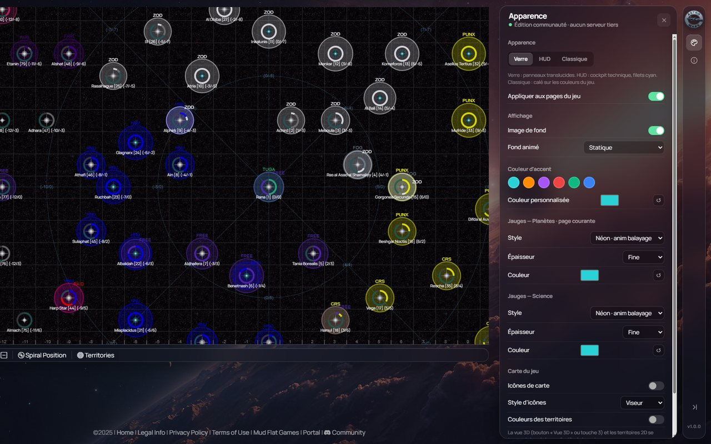

Le jeu,
en mode cockpit
Trois apparences au choix, des jauges graduées, un fond spatial et des cartes en 3D. Gratuit, sans compte, et rien ne quitte ton navigateur.

Aperçu bientôt disponibleTout le jeu, rhabillé
3 apparences
Verre translucide, HUD aux filets cyan ou Classique, fidèle aux couleurs du jeu. Couleur d'accent au choix, appliquée partout.
Pages du jeu
Onglets, tableaux, News, rapports de combat, boutons, fenêtres, barre et filtres de la carte suivent l'apparence.
Jauges graduées
Les barres de progression deviennent des instruments : segments, néon, HUD… réglables pour les Planètes et la Science.
Carte en 3D
La galaxie en trois dimensions, les territoires en 2D, et 7 styles d'icônes pour les systèmes.
Systèmes en grand
Sur la carte 3D, chaque système s'ouvre en grand avec ses planètes texturées, leurs propriétaires et leurs anneaux.
Planètes et Trade
Plusieurs fiches de planète côte à côte, le temps avant le prochain niveau, et sur Trade : tiers, coût en PP et convertisseur PP ⇄ $.
Installer
- Télécharge le ZIP de la dernière version et décompresse-le dans un dossier que tu gardes (ex.
Documents/AW-Cockpit) : il contient un dossier par navigateur et unLISEZ-MOI.txt. - Ouvre
chrome://extensions(Edge :edge://extensions, Brave et Opera : même principe). - Active le Mode développeur en haut à droite.
- Clique Charger l'extension non empaquetée et choisis le dossier
AW-Cockpit-Chrome-Edge-Brave-Opera. - Ouvre ou recharge AstroWars : le rail apparaît à droite. Réglages dans Apparence.
Firefox (128 ou plus récent) : about:debugging → Ce Firefox → Charger un module complémentaire temporaire → choisir le manifest.json du dossier AW-Cockpit-Firefox (à refaire à chaque redémarrage de Firefox). Le bouton Version Firefox donne ce dossier seul.
Mettre à jour
- L'extension te prévient : une carte Nouvelle version apparaît dans le jeu avec le bouton Télécharger. Tu peux aussi vérifier dans À propos → Vérifier maintenant.
- Télécharge le nouveau ZIP et remplace le contenu de ton dossier par celui du ZIP.
- Dans
chrome://extensions, clique ↻ Recharger sur AW Cockpit. - Rafraîchis les onglets du jeu avec Ctrl + Maj + R. Tes réglages sont conservés.
Pour savoir qu'une version est sortie, l'extension lit une fois par jour le numéro de la dernière version publiée sur GitHub. C'est tout : aucune donnée n'est envoyée, et l'installation reste entre tes mains.
Confidentialité
- Rien n'est envoyé. Pas de statistiques, pas de pisteur : l'extension ne parle qu'au jeu, comme ton navigateur (la carte 3D lit ta page Flottes, la page Trade tes Planètes et l'historique des prix, l'alerte incoming ta page News). Seule autre lecture : le numéro de la dernière version sur GitHub, une fois par jour.
- Pas de compte, pas de mot de passe. Rien à créer, rien à saisir.
- Une seule permission :
storage, pour mémoriser tes réglages sur ton ordinateur.
- Active uniquement sur astrowars.games. Aucun autre site n'est touché.
- Aucune action automatisée. L'extension ne clique pas et ne donne aucun ordre à ta place ; elle lit seulement quelques pages du jeu (détail dans la FAQ).
- Code ouvert. Les fichiers sources sont publiés sur GitHub et livrés non minifiés dans le ZIP (hormis la bibliothèque three.js) : chacun peut vérifier.
Questions fréquentes
Est-ce autorisé par le règlement d'AstroWars ?
Oui. Le règlement interdit d'automatiser des actions de joueur et d'avoir plusieurs comptes. L'extension ne fait ni l'un ni l'autre : elle ne clique jamais, ne construit rien, ne lance aucune flotte, n'achète et ne vend rien. C'est toujours toi qui joues.
Elle change l'affichage et, pour remplir certaines vues, relit quelques pages du jeu comme si tu les ouvrais toi-même (détail dans la question suivante). Le règlement autorise ce genre d'outil de lecture dans une mesure raisonnable.
À quoi l'extension se connecte-t-elle ? Mes données partent-elles ailleurs ?
Rien n'est envoyé, à personne. Pas de compte, pas de statistiques, pas de pisteur, aucun serveur tiers (pas même Holocron). Tes réglages restent dans ton navigateur.
L'extension contacte seulement deux endroits, et uniquement pour lire :
- Le jeu (astrowars.games), avec ta propre session, sans rien modifier :
- Carte 3D : ta page Flottes et la carte des secteurs
- Trade : tes Planètes (au plus toutes les 5 min) et l'historique des prix (au plus toutes les heures)
- Buildings : les fiches de tes planètes, pour les niveaux en cours
- Alerte incoming : la page News (au plus toutes les 5 min)
- Vue multi : les fiches planète que tu coches
- GitHub, une fois par jour : le numéro et les notes de la dernière version. Requête anonyme, sans cookie.
Les liens vers cette page ne s'ouvrent que si tu cliques dessus. Une seule permission est demandée (storage, pour tes réglages), l'extension n'agit que sur astrowars.games, et son code est public sur GitHub : chacun peut vérifier.
Le rail n'apparaît pas dans le jeu
Vérifie que tu as choisi le dossier qui contient directement manifest.json (AW-Cockpit-Chrome-Edge-Brave-Opera), pas le dossier parent. Vérifie que l'extension est activée dans chrome://extensions, clique ↻, puis Ctrl + Maj + R sur l'onglet du jeu.
Le rail peut aussi avoir été masqué : une petite languette à droite de l'écran le fait revenir.
Comment savoir qu'une nouvelle version est sortie ?
Depuis la version 1.0.6, une carte Nouvelle version apparaît dans le jeu, au plus tard le lendemain de la sortie. Pour vérifier tout de suite : rail → À propos → Vérifier maintenant. Cette page affiche aussi toujours la dernière version.
J'ai perdu mes réglages après une mise à jour
Le navigateur rattache les réglages à l'emplacement du dossier de l'extension. Pour les garder, remplace le contenu du même dossier au lieu de charger un nouveau dossier ailleurs, puis clique ↻.
Chrome affiche un avertissement sur le mode développeur
C'est normal pour une extension installée depuis un dossier et non depuis le Chrome Web Store. Tu peux fermer l'avertissement : l'extension continue de fonctionner.
Firefox : l'extension disparaît à chaque redémarrage
Firefox ne garde les modules chargés depuis about:debugging que jusqu'à sa fermeture. Il faut recharger le manifest.json du dossier AW-Cockpit-Firefox à chaque démarrage.
Puis-je l'utiliser avec l'extension AW de l'alliance ?
Active une seule des deux à la fois : elles habillent les mêmes pages et se gêneraient. Désactive l'autre dans la page des extensions.
Ça marche sur téléphone ?
Pas encore : l'extension est prévue pour les navigateurs d'ordinateur (Chrome, Edge, Brave, Opera, Firefox). Une application Android (APK) arrive bientôt.
Le jeu est plus lent avec l'extension
Coupe l'animation du fond (rail → Apparence → Fond) et ferme la carte 3D quand tu ne t'en sers pas. Si ça ne suffit pas, signale-le avec le formulaire ci-dessous en précisant la page concernée.
Signaler un bug
Décris ce qui se passe : le rapport s'ouvre sur GitHub, prêt à envoyer (compte GitHub gratuit). Sans compte, copie-le et envoie-le à la Team Holocron sur Discord.
Depuis l'extension (rail → À propos → Signaler un bug), la version, l'apparence et la page du jeu sont remplies automatiquement.
Rapports déjà ouvertsVersions
Chargement…